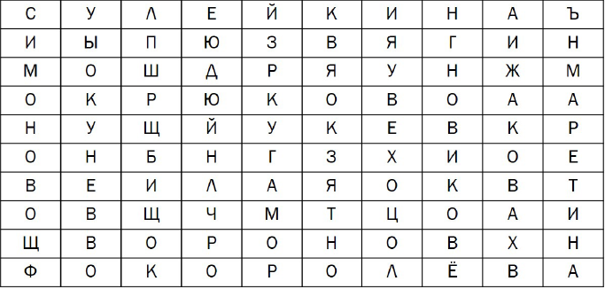

Музей «а музы не молчали» знакомит посетителей с жизнью людей,
переживших блокаду в юном возрасте. Здесь хранятся личные вещи блокадников,
произведения искусства, предметы мебели, книги.
Найдите в таблице десять фамилий детей блокадного Ленинграда.
Фамилии могут читаться по вертикали и горизонтали, слева — направо и наоборот.
фамилии располагаются только по прямой.
Ответы на здание указывайте в форме ответа
